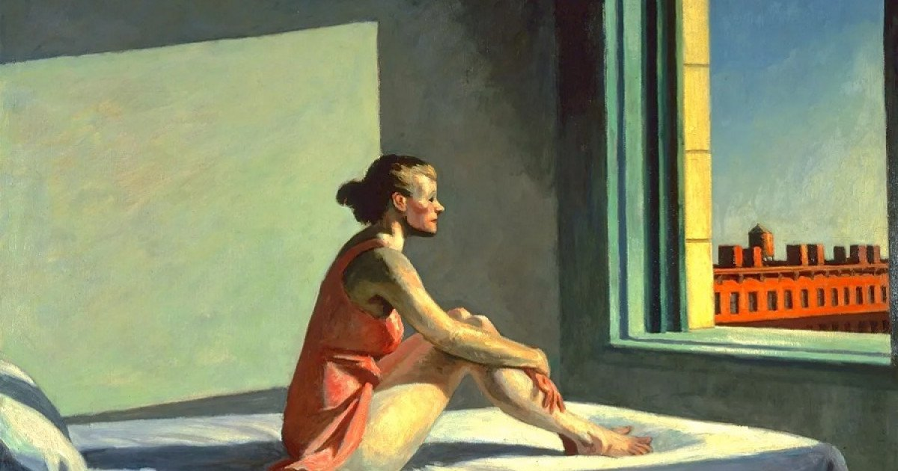
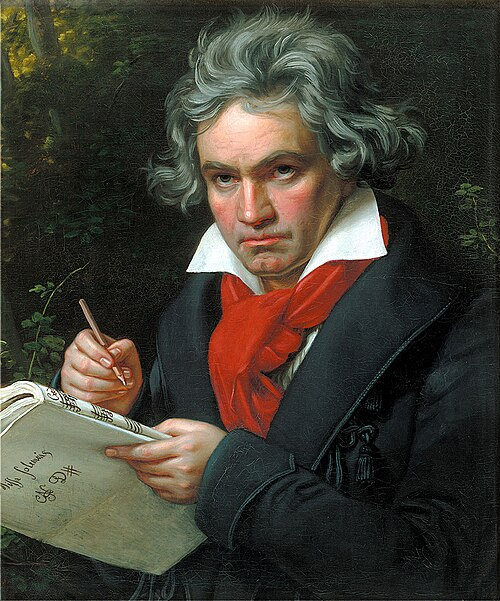

El artista como genio creador
Durante el Romanticismo, el artista deja de ser concebido como un simple ejecutor de normas estéticas y pasa a ser visto como un individuo excepcional, dotado de una sensibilidad profunda y una capacidad creativa única. El músico romántico se entiende a sí mismo como un genio creador, cuya obra surge de una necesidad interior más que de una función social específica.
Esta nueva visión implica una ruptura con la tradición clásica. La música ya no busca únicamente equilibrio y proporción, sino que se convierte en un medio para expresar emociones intensas como la melancolía, el anhelo, la pasión o la angustia.
Representación simbólica del ideal del artista romántico
El músico frente a la sociedad
El compositor romántico suele percibirse como un individuo incomprendido por la sociedad. Esta sensación de aislamiento refuerza la idea de que el arte auténtico no siempre es comprendido por el público general, y que el sufrimiento personal puede convertirse en fuente de creación artística.
Ludwig van Beethoven representa una figura clave en esta transformación, al romper con los modelos tradicionales y afirmar la autonomía del compositor. Franz Liszt, por su parte, encarna el ideal del virtuoso romántico, admirado públicamente y elevado casi al estatus de héroe cultural.
Ludwig van Beethoven (1770–1827), puente entre Clasicismo y Romanticismo

Franz Liszt (1811–1886), pianista virtuoso y figura emblemática del Romanticismo